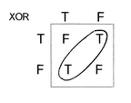

Machine learning
https://www.reddit.com/r/math/comments/4ieenr/calculus_and_backpropagation/d2xqaj7
http://devzum.com/2015/06/best-machine-learning-cheat-sheets/
https://s3.amazonaws.com/MLMastery/MachineLearningAlgorithms.png
{kind=link}
https://github.com/hangtwenty/dive-into-machine-learning
misc
examples of statistics using pandas: https://github.com/rouseguy/intro2stats/tree/master/notebooks
sort:
https://codesachin.wordpress.com/2016/06/25/non-mathematical-feature-engineering-techniques-for-data-science/
https://www.countbayesie.com/blog/2016/5/1/a-guide-to-bayesian-statistics
A Visual Introduction to Machine Learning — http://www.r2d3.us/visual-intro-to-machine-learning-part-1/
https://algobeans.com/
https://ml.berkeley.edu/blog/2016/11/06/tutorial-1/
https://ml.berkeley.edu/blog/2016/12/24/tutorial-2/
Computational Statistics in Python 0.1 — http://people.duke.edu/~ccc14/sta-663/index.html
Kaggle
Binary Classification: Titanic: Machine Learning from Disaster
Multi-Class Classification: Forest Cover Type Prediction
Regression with temporal component: Bike Sharing Demand
Binary Classification with text data: Random Acts of Pizza
Digit Recognizer
Amazon Employee Access Challenge
Sentiment Analysis on Movie Reviews
XGBoost
https://xgboost.readthedocs.io/en/latest/model.html
decision trees
https://en.wikipedia.org/wiki/C4.5_algorithm is number one in top ten ml algorithms
http://scikit-learn.org/stable/modules/tree.html
tutorials
http://thegrimmscientist.com/2014/10/23/tutorial-decision-trees/
http://people.revoledu.com/kardi/tutorial/DecisionTree/index.html
algorithm
we start at the root node
- find a split that that maximizes information gain
- do the split
- recur into two new nodes
stopping rules:
- max depth is reached
- leaf nodes are pure
- splitting doesn’t lead to an information gain
gini vs entropy
- Gini is intended for continuous attributes, and Entropy for attributes that occur in classes (e.g. colors)
- “Gini” will tend to find the largest class, and “entropy” tends to find groups of classes that make up ~50% of the data
- “Gini” to minimize misclassification
[…] we were able to analyze the frequency of agreement/disagremment of the Gini Index function and the Information Gain function. We found that they disagree only in 2%, which explains why most previously published empirical results concluded that it is not possible to decide which one of the two tests to prefer.
- q: gini vs entropy criterias for decision trees
sources:
https://www.garysieling.com/blog/sklearn-gini-vs-entropy-criteria
https://sebastianraschka.com/faq/docs/decisiontree-error-vs-entropy.html
https://sebastianraschka.com/faq/docs/decision-tree-binary.html
http://haohanw.blogspot.ru/2014/08/ml-decision-tree-rule-selection.html
https://www.quora.com/What-are-the-advantages-of-different-Decision-Trees-Algorithms
https://www.quora.com/Are-gini-index-entropy-or-classification-error-measures-causing-any-difference-on-Decision-Tree-classification
entropy
impurity of split

missing values
svm
Why someone would call an algorithm a machine? I have no clue, it was invented by a russian.
— Sebastian Thrun, Intro to Machine Learning
neural networks
http://neuralnetworksanddeeplearning.com/
http://www.asimovinstitute.org/neural-network-zoo/
https://github.com/songrotek/Deep-Learning-Papers-Reading-Roadmap
A Few Useful Things to Know about Machine Learning https://gist.github.com/shagunsodhani/5c2cdfc269bf8aa50b72, http://machinelearningmastery.com/useful-things-to-know-about-machine-learning/
Методы оптимизации нейронных сетей — https://habrahabr.ru/post/318970/
universal approximation theorem
http://neuralnetworksanddeeplearning.com/chap4.html
https://en.wikipedia.org/wiki/Universal_approximation_theorem
http://stackoverflow.com/questions/25609347/can-neural-networks-approximate-any-function-given-enough-hidden-neurons
http://cstheory.stackexchange.com/questions/17545/universal-approximation-theorem-neural-networks
Regarding your example of f(x) = x2, yes you can approximate it with a neural network within any finite range: [-1,1], [0, 1000], etc.
But again, there is no neural network (or any other approximation structure) with a finite number of parameters that can approximate f(x) = x2 for all x in [-∞, +∞].
https://theneural.wordpress.com/2013/01/07/universal-approximation-and-depth/
Hidden layer grows $O(e^d)$, where $d$ is dimensionality of input space.
http://stackoverflow.com/questions/8160183/neural-nets-as-universal-approximators
the theorem only says that a function can be represented by a neural net. It does not say whether this representation can be learned or that it would be efficient. In fact, for a single-layer net approximating a highly varying function, the size grows exponentially with the function’s complexity.
Quite. It’s not hard to come up with models or families of functions which share this property.
What matters is not only whether they can learn it but how much data they need to learn it to a given degree of accuracy. This is the kind of question addressed by nonparametric statistics and statistical learning theory.
the Weierstrass approximation theorem states that every continuous function defined on a closed interval [a, b] can be uniformly approximated as closely as desired by a polynomial function.
max(0, x) for activation function: http://stats.stackexchange.com/questions/141960/deep-neural-nets-relus-removing-non-linearity
TODO: does svm has this property?
sigmoid vs tanh
http://stats.stackexchange.com/questions/101560/tanh-activation-function-vs-sigmoid-activation-function
http://stats.stackexchange.com/questions/142348/tanh-vs-sigmoid-in-neural-net
https://www.quora.com/In-machine-learning-algorithms-why-is-sigmoid-function-used-primarily-and-not-functions-like-tanh-x-In-tanhx-for-eg-seem-to-split-y-axis-evenly-and-flatten-out-fast-as-x-approaches-+-infinity-The-range-being-sigmoid-0-1-and-tanh-x-1-1
Sign(sum) can be useful as an example of non-linear activation function.
https://medium.com/@karpathy/yes-you-should-understand-backprop-e2f06eab496b
perceptron
A single perceptron can only solve linearly separable problems.
XOR is not one of them.
TODO: my own illustration
From http://natureofcode.com/book/chapter-10-neural-networks/:

